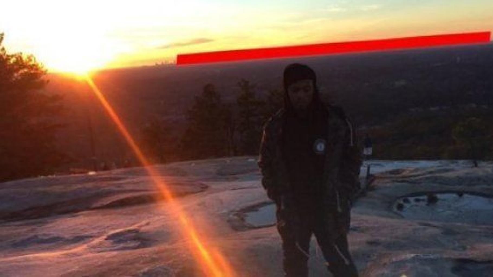

Nous acceptons depuis longtemps le fait que notre planète a une forme
sphérique. Les géomètres et les astronautes l’appellent un ellipsoïde de
révolution ou un géoïde. En fait, c’est toujours une boule, juste un peu
aplatie aux pôles. Mais, aussi surprenant que cela puisse paraître, tout
le monde n’est pas parvenu à accepter cet état de fait. Il y a un groupe
de personnes qui croient en la théorie de la terre plate, une théorie
selon laquelle la Terre serait un disque plat. Voyons de quoi retourne
cette théorie pour le moins surprenante.
La théorie du complot de la Terre plate est une théorie
du complot qui affirme que la Terre est plate et non sphérique. Elle est
souvent associée à la théorie du complot de la Terre creuse et/ou à la
théorie de la Terre fixe et est souvent considérée comme une forme
d'anti-sciences.
La Flat Earth Society (aussi appelée
International Flat Earth Society ou International Flat Earth
Research Society, IFERS) est une organisation soutenant l'idée
de la Terre plate, fondée en 1956 par
l'Anglais Samuel Shenton, puis dirigée par
l'Américain Charles K. Johnson. À la mort de
Johnson, en 2001, l'organisation a connu quelques années
d'inactivité, jusqu'à sa reprise en 2004 par Daniel Shenton,
actuel dirigeant. Son siège social était basé à
Lancaster, en Californie.
Bien que la communauté Flat Earth comptait environ
3 000 membres à un moment donné après sa
création, l'organisation a connu un moment de déclin vers les
années 1980 et n'a prospéré que vers le
21e siècle. La théorie s'est depuis propagée
rapidement grâce à internet et aux réseaux sociaux.
Aujourd'hui, plusieurs groupes de passionnés du "platisme"
rejoignent Facebook.
Pour le rappeur et platiste B.o.B, le principal
argument pour démontrer que la Terre est plate, reste
la planéité de l'horizon. En janvier 2016, le rappeur
avait posté une photo de lui sur son compte Twitter (puis supprimé) sur
laquelle on pouvait le voir poser devant un paysage. À l'arrière-plan,
il avait pris soin de surligner d'un trait rouge
l'horizon afin de bien montrer que la ligne d'horizon n'était pas
courbée. D’autre part, on constate que l’horizon se lève toujours au
niveau des yeux, indépendamment de l’altitude. Ce ne serait certainement
pas le cas si la Terre était ronde, car on devrait en principe baisser
progressivement le regard ou l’objectif de la caméra, au fur et à mesure
qu’on s’élève.

La mécanique des fluides voudrait qu’un liquide au
repos ait toujours sa surface plane. C’est ce qu’on observe, par
exemple, à la surface d’un lac par temps calme. Si la Terre était
sphéroïdale et tournait à des vitesses et accélérations
considérables, on ne pourrait jamais observer de telles
surfaces plates, du fait de l’entraînement causé par ce supposé
mouvement rotatif. Bien plus, on devrait observer des
renflements d’eau massifs provoquant des inondations et des tsunamis
continus, ou encore observer certains cours d’eau allant à l’encontre de
leur écoulement naturel, c’est-à-dire de
l’aval vers l’amont ! Or, rien de tout cela n’est
constaté. Le simple bon sens voudrait que si les eaux des mers et des
lacs restent planes, par temps calme, c’est tout simplement parce que la
Terre est plate. D’ailleurs, les capitaines des navires qui naviguent
sur de grandes distances ne prennent jamais compte d’une éventuelle
courbure dans leurs calculs. Bien au contraire, tous ces calculs sont
basés sur la trigonométrie plane et non sphérique.
Jusqu’à aujourd’hui, l’Antarctique reste mal connu, et
seul quelques gouvernements s’arrogent le droit d’y effectuer on ne sait
trop quelles expériences, loin du reste des humains qui n’y ont pas
accès. Bien plus, des vols d’avions dont les trajets seraient énormément
raccourcis, au cas où la planète serait ronde, s’ils passaient au-dessus
de l’Antarctique, par exemple entre Sydney (Australie) et Santiago
(Chili), font de curieux détours avec des escales à Los Angeles et
autres aéroports d’Amérique du Nord ! Ceci ne peut être compréhensible
que sur une terre plate. Quiconque regarde la carte plane de la Terre
plate saura que le centre du disque terrestre est occupé par ce qui est
appelé « pôle Nord », autour duquel se déploient les différents
continents et océans, tandis que ce qui est appelé « Antarctique » n’est
autre qu’une très large muraille de glaces entourant le disque
terrestre.

Seul ce modèle permet d’ailleurs d’expliquer les écarts gigantesques de
température entre le « pôle Nord » et le « pôle Sud », alors qu’ils sont
supposés avoir des températures plus ou moins similaires. En effet, si
la température moyenne de la première tourne autour de -15°C, celle du
second avoisine -50°C, sachant qu’elle peut atteindre en hiver des
records en dessous des – 80°C. La Terre tourne à 1600 km/h. Pour les
platistes, si c'est réellement le cas, pourquoi ne nous envolons pas ?
Pour eux, la Terre ne tourne pas. Elle est dans un état stationnaire.
Si la Terre est ronde, alors comment se fait-il que nous puissions voir
des planètes entre la Terre et le Soleil la nuit ?

Enfin, l'un des arguments avancés par ceux qui soutiennent la théorie de
la Terre plate concerne les rayons du Soleil au crépuscule. Selon eux,
le Soleil ne se trouve pas à 150 millions de kilomètres de chez nous. Il
serait plus petit que ce que l'on nous dit et plus proche. Si c'était le
cas, les rayons devraient être parallèles quand on peut les voir au
crépuscule et non pas nous arriver sous formes de raies lumineuses
divergentes quand ils traversent des zones ombragées. D’autre part, les
écarts de température simultanés sur la Terre, à quelques milliers de
kilomètres seulement (par exemple une chaleur étouffante en Afrique, par
contraste à un froid glacial en Antarctique) rendent complètement
absurde la thèse qui voudrait que la source de chaleur se situerait à
des dizaines de millions de kilomètres de là. Ces écarts sont trop
importants pour être expliqués par le modèle héliocentrique classique.
Et enfin, on ne peut pas occulter que même des endroits situés à la même
latitude connaissent un comportement différent du soleil, selon qu’ils
soient au nord ou au sud de l’équateur (longueur des jours d’hiver ou
d’été, aubes et crépuscules différents, disparités flagrantes du nombre
d’espèces végétales et animales, etc.). Tout cela ne peut être expliqué
que par la Terre plate.
Nous avons tous déjà étés à la plage, et lorsque nous regardions les
bateaux au loin, nous pouvons remarquer que plus ils s’éloignent, plus
le bas du bateau disparait, et le mât aussi, mais plus tard. De la même
manière, lorsque l’on se situe au Cap Gris Nez, on peut apercevoir au
loin les hauteurs des côtes anglaises. Or, lorsque l’on se rend de
l’autre côté, en Angleterre, on remarque que le bas des côtes françaises
n’est pas visible non plus. Ceci est dû au fait que la terre est
sphérique, et non plate ! C’est ce qu’avait remarqué Ératosthène en 300
avant J.C.
Lorsque l’on observe la lune, on peut voir que l’ombre de la terre sur
celle-ci est ronde. Mathématiquement et physiquement, la seule
explication possible est qu’elle soit de forme sphérique.
L’hypothèse selon laquelle le Soleil tourne autour de la Terre, sur un
dôme est aussi fausse. Bien que l’idée issue de la science-fiction de
vivre dans un dôme isolé des espèces aliens soit très intéressante,
l’astronomie a déjà son propre avis là-dessus. D’une part, cela
impliquerait que le fuseau horaire soit le même partout : pas besoin de
faire de tests grandiloquents pour vérifier cela, soit on appelle
quelqu’un au Québec, soit on prend un billet d’avion pour aller vers
l’Est, on avancera ainsi plus vite dans le fuseau horaire local. D’autre
part, cela impliquerait que nos ancêtres se seraient perdus en mer
depuis bien longtemps. En effet, on utilisait les étoiles pour se
repérer : l’hémisphère Sud et Nord étant différent, il n’y aurait qu’un
seul hémisphère, et les étoiles seraient les mêmes partout. Or
aujourd’hui on distingue bien deux hémisphères distincts.
Avoir une Terre plate implique que la planète ne possèderait pas de
champ magnétique, donc pas de Nord, ni de Sud. Mais les oiseaux ne
sauraient pas migrer si c’était le cas, et les boussoles auraient
quelques défauts de fonctionnement…